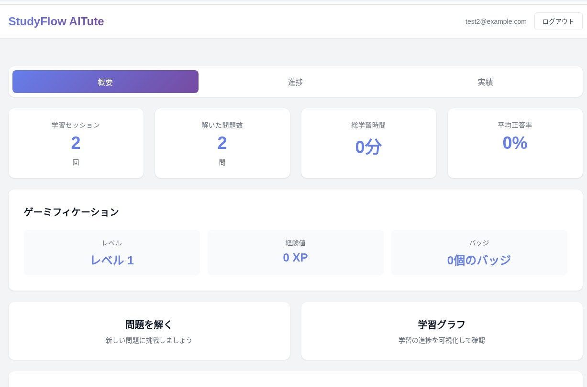

こんなアプリです — AITute の全体像
３ステップで完結する “ワンストップ個別指導”
| ステップ | 学習者がすること | AITute が返すもの |
|---|---|---|
| ① 問題選択 | 内蔵問題集をタップ または写真・PDF・テキストで独自問題を投稿 |
問題を自動認識しホワイトボードに表示 |
| ② 解説生成 | — | ベクトル図・途中計算・結論をリアルタイム描画 ＋ 定義カード・公式カードを自動整列 |
| ③ 深掘り質問 | チャット欄で自由入力 | AI チューターが追加板書とカードを生成しながら対話 |
※現在は数学を中心にベータ提供。物理は順次拡充予定。
３つの教材で下位レベルから最難関までを網羅
- ・高１・高２範囲の基礎問題集
- ・共通テスト／難関大入試の過去問ライブラリ
- ・ユーザー自前の問題（写真・PDF・手入力）
AITute ならではの特色
- ・AI 個別指導を月額サブスクで――従来の個別塾の 1/10 以下のコスト感。
- ・教材・解説・質問が１画面に集約――"探す時間ゼロ"で学習に集中。
- ・学校の進度と切り離せる――先取りも、基礎からのやり直しも自在。
- ・地方・海外でも同一品質――塾や家庭教師が近くにない環境でも学べる。
- ・招待コード制ベータ：現在は招待ユーザー限定で公開し、品質改善のフィードバックを優先的に取り込み。
主要機能のご紹介
学習ダッシュボード
学習者の進捗状況を一目で把握できる直感的なダッシュボードを提供します。学習セッション数、解いた問題数、勉強時間、平均正答率などの重要な指標を可視化し、ゲーミフィケーション要素を取り入れることで学習のモチベーション向上を図ります。
学習マップ（問題関連性の可視化）
AIが分析した問題同士の関連性をネットワークグラフで表示する革新的な機能です。学習者は自分の理解度に応じて、関連する問題を効率的に学習できます。視覚的な表現により、知識の体系的な理解を促進します。

問題選択インターフェース
豊富な問題カテゴリから学習者のレベルに適した問題を選択できる直感的なインターフェースです。数学の各分野（代数、幾何、微積分など）を体系的に整理し、効率的な学習経路を提供します。

エビデンスのある教育へ
近年、AIによる対話式の教育について複数のエビデンスが報告されています。ハーバード大学やスタンフォード大学をはじめとする世界トップクラスの研究機関が、AI教育システムの効果を実証的に検証し、従来の教育手法を大きく上回る学習成果を確認しています。
AITuteは、これらの最新の科学的な研究成果に基づいてアプリケーションをデザインしています。単なる技術的な革新ではなく、教育科学の知見に裏打ちされた、真に効果的な学習体験を提供します。
論文: "AI tutoring outperforms in-class active learning: an RCT introducing a novel research-based design in an authentic educational setting"
大学レベルで短時間×高効果。ハーバード大の物理授業でのランダム化比較試験では、AIチュータを使った学生がアクティブ・ラーニング授業の2倍以上の学習ゲインを達成。学習時間も短縮され、理解度・モチベーションが有意に向上した。
ポイント: AITuteと同じ対話式設計で、大学レベルの深い理解をより短時間で実現。
論文: "The effect of ChatGPT on students' learning performance, learning perception, and higher-order thinking: insights from a meta-analysis"
51研究を統合したメタ分析。2025年発表のChatGPT教育活用メタ分析（51件対象）では、学習成績の平均効果量g=0.867（大効果）を達成していることが確認された。問題解決型学習と4〜8週間継続利用で効果を最大化できることが示された。
ポイント: AIによる教育に効果があることの強力なエビデンス
論文: "Tutor CoPilot: A Human-AI Approach for Scaling Real-Time Expertise"
人間チューターの教育効果を9%引き上げ。スタンフォード大の1,000名超実験では、AIリアルタイム助言により弱いチュータの生徒合格率が56%→65%（+9pt）向上。年間コスト約20ドル/人。
ポイント: 教師や家庭教師との連携で、説明方法のヒントを即時提案し指導の質を底上げできる。→ 人間の教員よりも優れている可能性